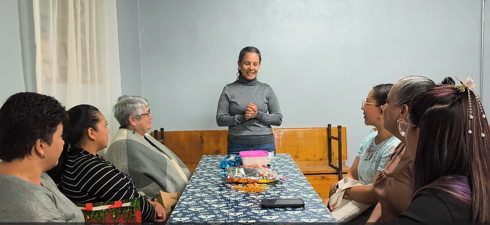
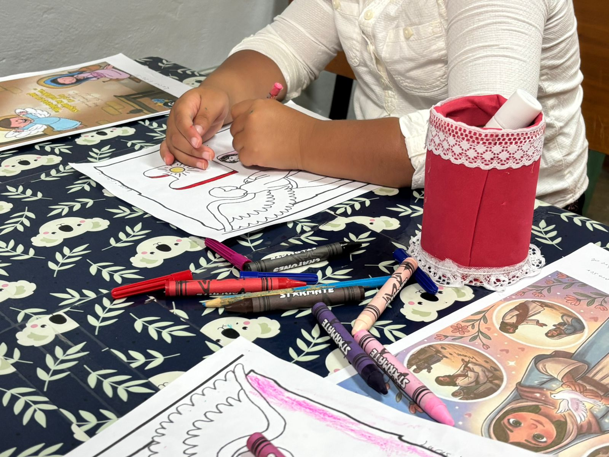
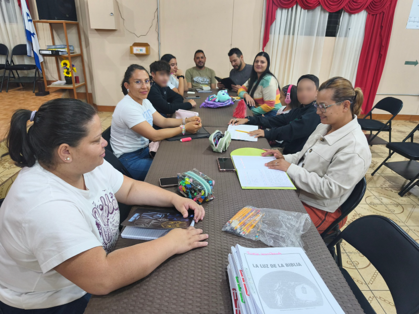
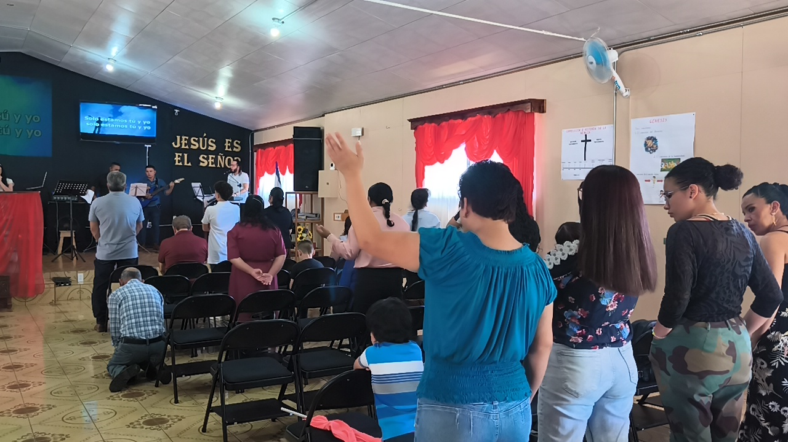
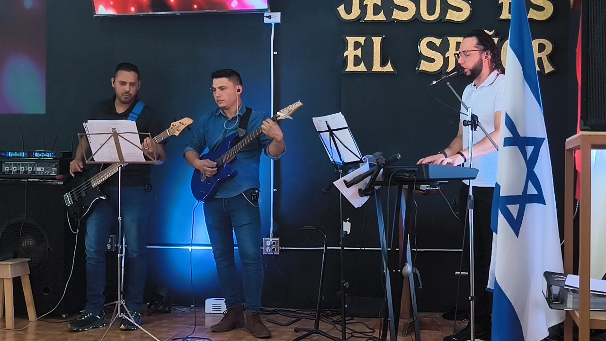
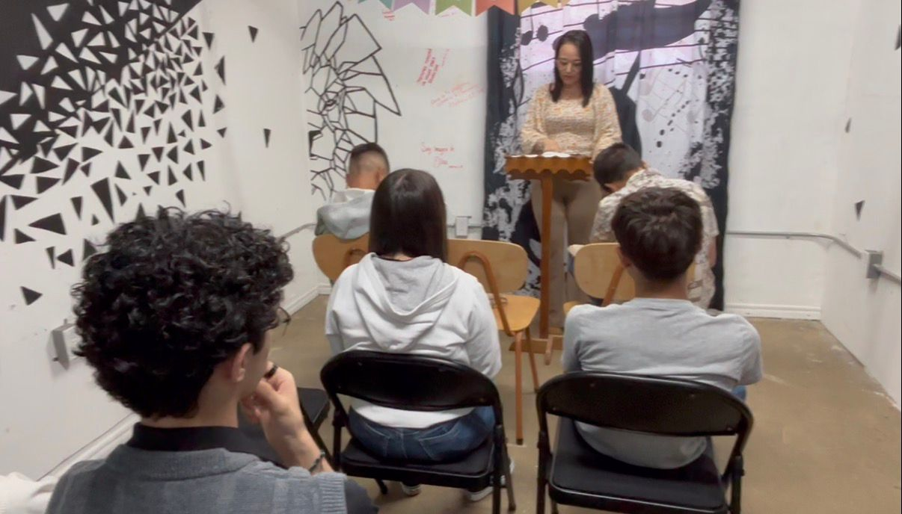
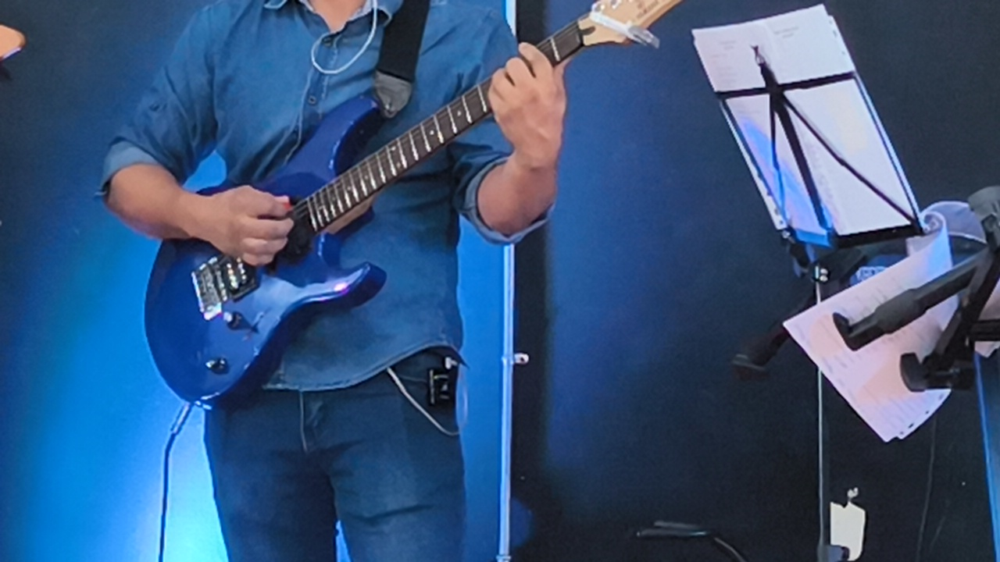
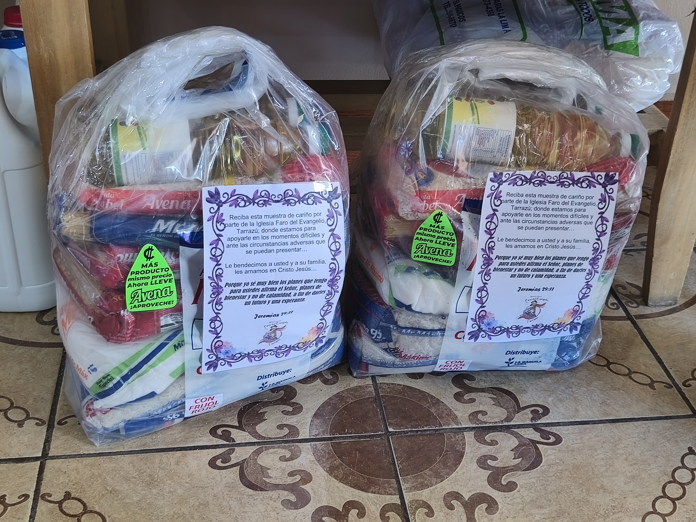
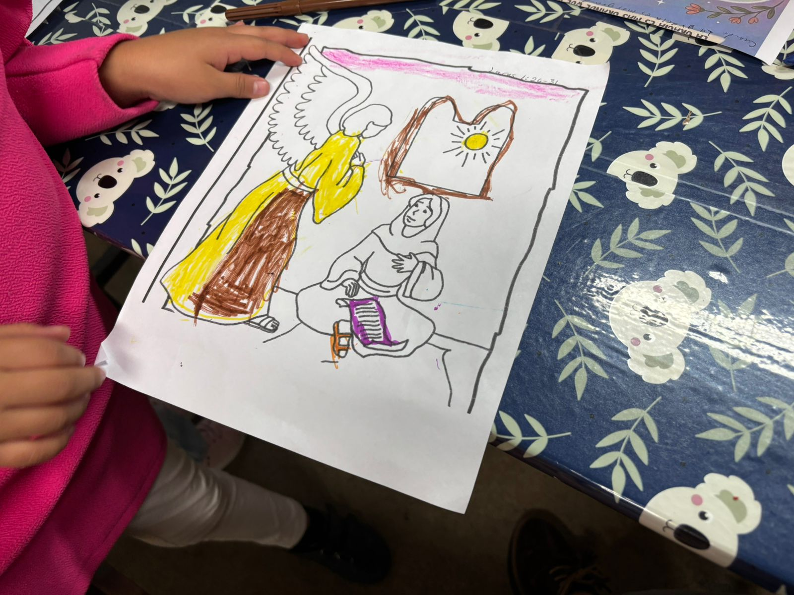

Acerca de nosotros
Una comunidad viva en Cristo
Nuestra congregación es un espacio de comunión, crecimiento espiritual y servicio, donde buscamos conocer a Dios, fortalecer nuestra fe y vivir los principios bíblicos en comunidad.
A través de la enseñanza, el discipulado y la participación activa, procuramos formar personas comprometidas con su caminar cristiano y con el servicio a los demás.
Porque yo sé muy bien los planes que tengo para ustedes, planes de bienestar y no de calamidad, a fin de darles un futuro y una esperanza.
Jeremías 29:11

Nuestra visión
Jesús es el Señor
Debemos luchar para que las personas con quienes hablamos o se acercan a la iglesia, se sientan de la mejor manera, logrando así entender que lo más especial que nos puede suceder es conocer al Señor y experimentar en Él tantas bendiciones.
Lograr también entender la necesidad que tenemos de aceptar al Señor Jesucristo como nuestro Salvador y Señor, pues solo en Él podemos tener la salvación eterna de nuestra alma. (Hechos 4:12)
Él es el Camino, la Verdad y la Vida. — Juan 14:6
Lo que hacemos
Nuestros ministerios





Únete al equipo
¿Quieres servir?
Servir es una expresión práctica de la fe cristiana y una respuesta al llamado de Dios. No se limita a una función específica, sino que implica disposición, compromiso y responsabilidad.
Primer acercamiento
Integrarse a la congregación y conocer nuestra comunidad de fe.
Discipulado
Formación y crecimiento espiritual que fortalece el carácter y la fe.
Servicio
Poner la fe en acción, sirviendo donde Dios te ha llamado.
Áreas de servicio
Ministerio de Niños
Enseñanza dominical en ambiente seguro y organizado.
Ministerio de Alabanza
Guiar la congregación en adoración con excelencia.
Ministerio de Jóvenes
Crecimiento espiritual y participación activa juvenil.
Ministerio de Multimedia
Proyección, redes sociales y edición audiovisual.
Grupo de Oración
Intercesión y búsqueda de Dios en comunidad.
Enseñanza y Dirección
Apoyo a la enseñanza bíblica y conducción de servicios.
Ministerio de Artes
Expresiones artísticas para comunicar mensajes de fe.
Hospitalidad y Apoyo
Recibir personas y colaborar en el orden de servicios.
Grupo de Damas
Comunión y crecimiento para mujeres de la iglesia.
Grupo de Varones
Fortalecimiento espiritual y liderazgo masculino.
Mantenimiento Físico
Cuidado y bienestar de las instalaciones de la iglesia.
Formación espiritual
¿Qué es el discipulado?
El discipulado es un proceso de acompañamiento y crecimiento espiritual, donde aprendemos a conocer a Dios, fortalecer nuestra fe y vivirla de manera práctica en nuestra vida diaria.
A través de la enseñanza bíblica, la oración y la comunión, cada persona es acompañada en su caminar con Cristo, respetando su proceso y tiempo espiritual.
Quiero iniciar discipulado



Alabanza y adoración
Música que eleva el corazón
Nuestro equipo de alabanza guía a la congregación en momentos de adoración genuina. La música es puerta de encuentro con Dios, y cada servicio es una oportunidad para elevar nuestros corazones juntos.
Cada domingo celebramos con canciones, oración y la Palabra, en un ambiente donde todos son bienvenidos tal como son.
Servicio a la comunidad
El Granero: amor en acción
Distribuimos canastas con víveres y un mensaje de esperanza a familias que lo necesitan en nuestra comunidad de Tarrazú. Porque la fe sin obras está muerta, y nosotros creemos en servir con manos y corazón.
Cada canasta lleva el texto de Jeremías 29:11 como recordatorio de que Dios tiene planes de bien para cada familia.
Quiero ayudar
0
Áreas de servicio
0
Días a la semana
Jer 0
Nuestra promesa
0
Comunidad · Tarrazú
Estamos aquí para ti
Contáctanos
Dinos en qué podemos ayudarte. Nos amamos en Cristo Jesús.
Ubicación
San Marcos, Santa Cecilia — Tarrazú, Costa Rica
Teléfono / WhatsApp
+506 6036 7850
Correo electrónico
iglesiafarodelevangelio@gmail.com
Redes sociales
¡Gracias por tu mensaje!
Abriendo WhatsApp para enviarlo directamente...
Abrir WhatsApp manualmente